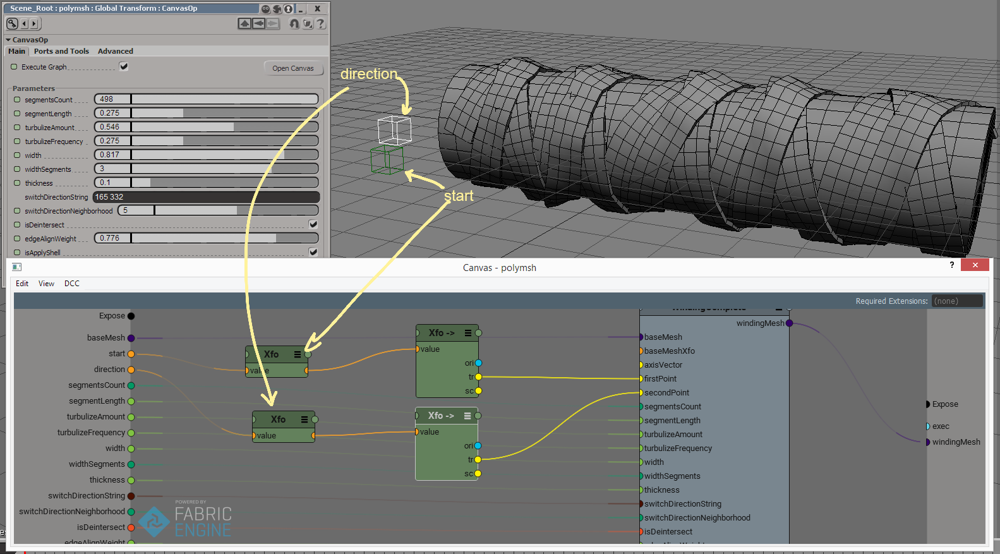

FE winding generator
Last update: 07.07.2016
Description: This compound is a port of the similar ICE-compound to the FabricEngine. It creates a strip which automatically winding around the cylindrical shape.
Download: WindingComplete.canvas
How to use:
Video with demonstration process: